Avalanche Accident Explorer Help
Background
This explorer tool is a collaborative effort between CAIC and the Colorado Mountain College (CMC) Geographic Information Systems (GIS) program. Incorporating CAIC avalanche accident statistics, Lucy Kepner, Joe Tayabji, and Dara Seidl created the application using the open-source JavaScript libraries Leaflet and Chart.js.
The application includes an interactive map on the left and a series of connected charts on the right or bottom, depending on screen size. Visitors to the site can filter accidents appearing in the map by clicking on variables of interest in the charts, using the lasso tool in the map, or selecting a range of dates in the date drop-down. The map defaults to showing fatal accident locations for the last five avalanche years.
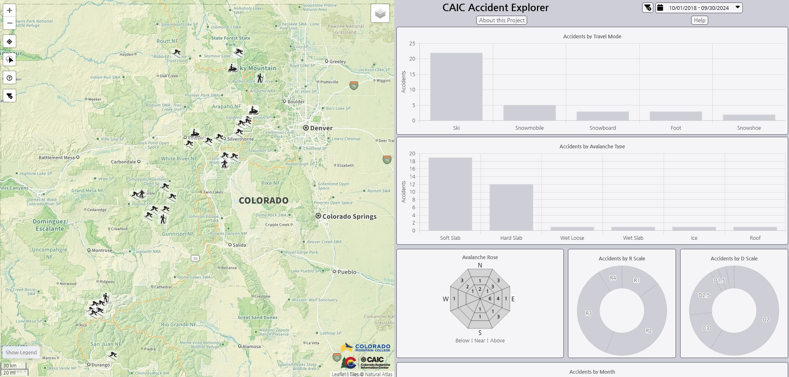
Accidents
Avalanche accidents occur when there is human involvement with an avalanche, meaning that at least one person was caught, buried, or killed. Currently, only fatal accidents where at least one death occurred are depicted in the map. Accident statistics portrayed in this application date back to December 2009. For more information, go to CAIC Statistics & Reporting.
Map Layers
The full list of map layers can be found by hovering the cursor over the layers button in the top right of the map:
This opens up the full list of layers, including basemaps and primary data layers:
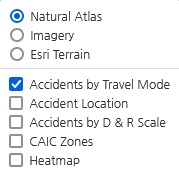
Basemaps are listed at the top next to the radio buttons. You can only view one basemap at a time.
Primary data layers are at the bottom of the layer list and indicated by the checkboxes. You can turn on multiple layers at once. You can see the legend associated with each primary data layer by hovering over the Show Legend button at the bottom left of the map:
Primary Layers
Accidents by Travel Mode
This is the default layer in the map. Accident points are shown with an icon representing the travel mode of the person(s) involved in the accident. Clicking or tapping on a point will open a popup with accident statistics and a link to the accident report.
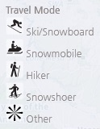
Accident Location
This is a simple point layer of avalanche accident locations, symbolized by purple dots.
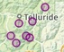
Accidents by D & R Scale
This layer provides dual symbology: The D Scale (destructive size, 1-5) is indicated by the color of the circles (yellow to red), and R scale (relative size, 1-5) is indicated by circle radius (small to large).
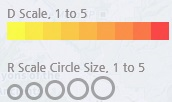
CAIC Zones
The CAIC Zones layer shows polygon boundaries that forecasting is available for. Clicking or tapping on a zone will open a popup with the zone name.
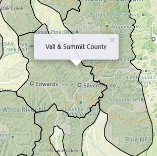
Heatmap
The heatmap is a representation of the density of the accident points. The heatmap layer adjusts based on how zoomed in the map is. A higher density of accident points is shown in purple with lower densities depicted in light blue.
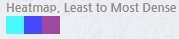
Base Layers
Natural Atlas
This is the default basemap for the Accident Explorer. Natural Atlas blends natural and human-made features with contour lines and labeled road, trail, and peak names.
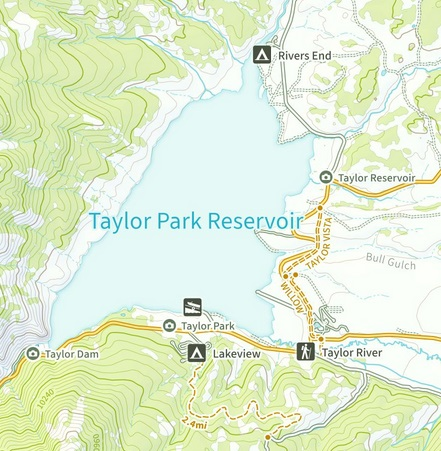
Imagery
The imagery basemap shows satellite imagery sourced by Esri, which allows for viewing of treeline. As you zoom in, the imagery displays at higher resolution.
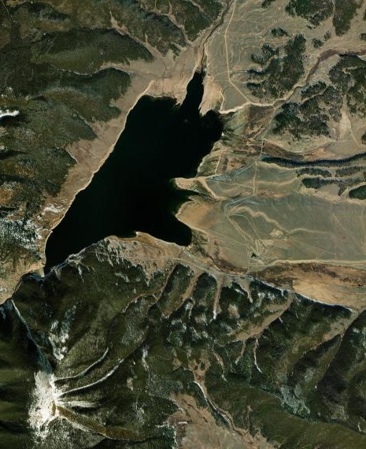
Esri Terrain
This minimalist basemap from Esri shows shaded relief and water features.The locations of points relative to hills and mountains can easily be seen.
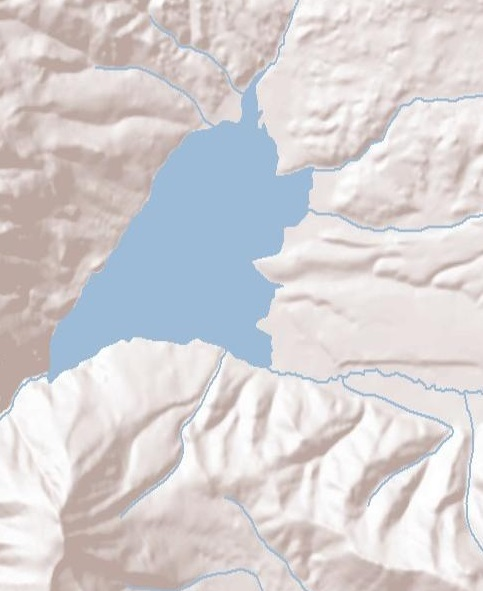
Map Buttons
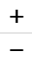 Use the + and - buttons to control the zoom of the map. The + button will zoom in and the - button will zoom out. You can also use the scroll wheel of a mouse or your fingers to zoom in and out of the map.
Use the + and - buttons to control the zoom of the map. The + button will zoom in and the - button will zoom out. You can also use the scroll wheel of a mouse or your fingers to zoom in and out of the map.
This is the Locator button. Cick this button to see your location on the map.
 This is the Lasso tool. To select a custom set of points in the map, click this button, then click, hold, and move the mouse to draw a polygon on the map around the points you are interested in. This will filter to the accident points in your lasso and update the charts.
This is the Lasso tool. To select a custom set of points in the map, click this button, then click, hold, and move the mouse to draw a polygon on the map around the points you are interested in. This will filter to the accident points in your lasso and update the charts.
This is the Help button. Clicking it will bring you back to this page.
This is the Clear Filters button, which will reset the data selection and remove any filters from the charts. The application will reset to accidents from the last five avalanche years and to the original zoom level of the map. Use this button to bring the original dataset back.
Date Selector
Just above the charts is the Date Selector. Data in the map and charts are filtered between the dates shown in the date selector. The date filter defaults to accidents in the last five avalanche years. One avalanche year is October 1 - September 30. Click the drop-down to choose different presets of dates, including Current Avalanche Year, Last Avalanche Year, Last 10 Avalanche Years, All accidents (since 2009), or a Custom Range of dates through the calendar. You can also type custom dates in the top bar, pressing Apply in the expanded calendar range to set them and filter the map and charts.
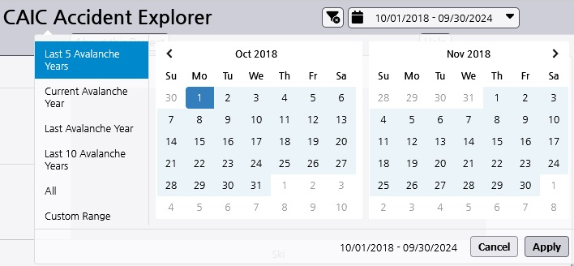
Clear Filters
There are two spots to clear filters in the map. One is the bottom left of the map buttons, described above. The other is just to the left of the date selector. Clicking the Clear Filters button will reset any selections made in the charts, clear the lasso filter, and restore the range of dates to the last five avalanche years. It will also reset the zoom of the map to the original zoom level.
Charts
The application includes six interactive charts: travel mode, avalanche type, an avalanche rose, R scale, D scale, and month. Clicking on a category in a chart will filter the accidents in the map. The charts will also update their numbers when a filter is applied from the date selector, lasso tool, or another chart. Click on any of the bars or labeled categories to select only data in that category. The filters are stackable, meaning that multiple charts can be used to filter. When you click on a chart, it keeps track of the order of the filtering and changes the label at the top of the chart. For instance, if you first select the Hard Slab avalanche type and then the Snowmobile travel mode, the chart titles will keep track of how many accidents were filtered in the first filter, then in the second filter, and so on.
To clear all the filters, click on the at the top of the chart panel.
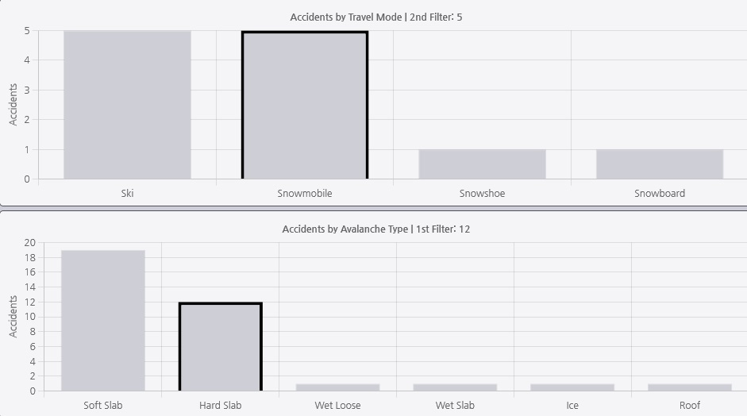
Once a chart filter is applied, you can also reset the filter by clicking on a different category in a parent chart of the filtering. With the example above, Avalanche Type is the first filter. If you click on a different Avalanche Type category, such as Soft Slab, any subsequent or secondary filters (in this case, Travel Mode), will be cleared. In all charts except the Avalanche Rose, selecting another bar or category will switch to that type of avalanche accident and deselect the previous type.
Changing the date range will also clear the filtering in the charts and reset the map to all accidents between that date range.
Avalanche Rose
The Avalanche Rose stores data by aspect and elevation below/near/above treeline. In this chart, you can filter on multiple cells, clicking on cells to add them to your selection and clicking on them again to deselect. You can also filter with the buttons Below | Near | Above to filter on accidents at these elevations at all aspects.
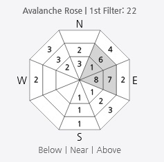
Example
Below represents an example workflow. First, a collection of cells near or above treeline is selected in the avalanche rose. This filters the map to 22 accidents. Next, a selection is made in the R scale donut chart for accidents with a relative scale of R2. This further filters the 22 to 8 accident points. Third, a selection is made for accidents from this subset with a destructive scale of D3. This returns just 1 accident, which we can see from the Accidents by Month chart took place in March. There will be 1 point shown in the map.
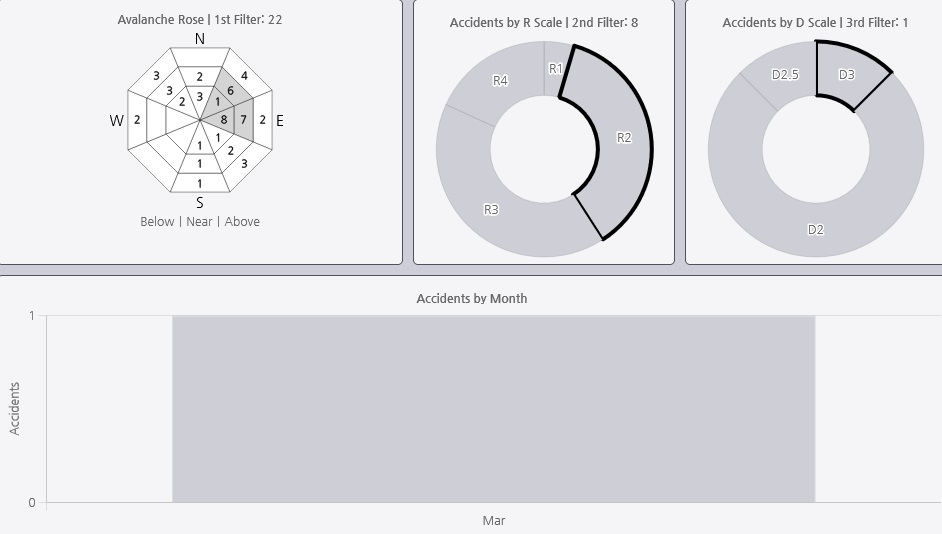